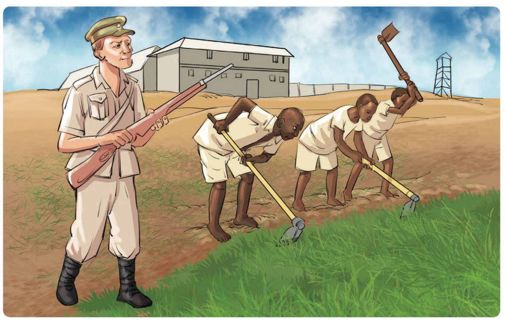

raia wa kawaida;
(d) Kazi za Jeshi la Polisi zilikuwa zaidi mijini. Hii ilitokana na kwamba katika maeneo ya mijini ndiko kulitokea fujo mara kwa mara. Maeneo ya vijijini walipelekwa polisi pale tu zilipotokea fujo. Baada ya kutuliza fujo, polisi hao walirudi maeneo ya mijini. Mijini ndiko kulikuwa chimbuko la fujo zote na za mara kwa mara; na
(e) Vituo vidogo vya polisi vilianzishwa mashambani. Mashamba ya Wazungu yalilindwa dhidi ya Watanganyika. Katika baadhi ya maeneo, wananchi waliharibu mazao katika mashamba ya wakoloni. Polisi waliwekwa jirani na maeneo hayo ili kutoa ulinzi na kuzuia matendo ya kihalifu.
Magereza
Gereza ni eneo maalumu ambako wahalifu huzuiliwa kwa muda mahususi. Lengo la kumzuia mkosaji ni kumfanya asiendelee kutenda uhalifu na ajirekebishe na kurudi kuwa raia mwema. Mahali ambapo mhalifu huzuiliwa huitwa jela na mamlaka inayosimamia jela ni magereza. Mtu anayeshikiliwa jela huitwa mfungwa. Wafungwa wakati wa ukoloni walinyimwa haki za msingi na kufanyishwa kazi kama sehemu ya adhabu. Kielelezo namba 12 kinaonesha jinsi wafungwa walivyofanyishwa kazi katika mashamba ya mazao mbalimbali.
